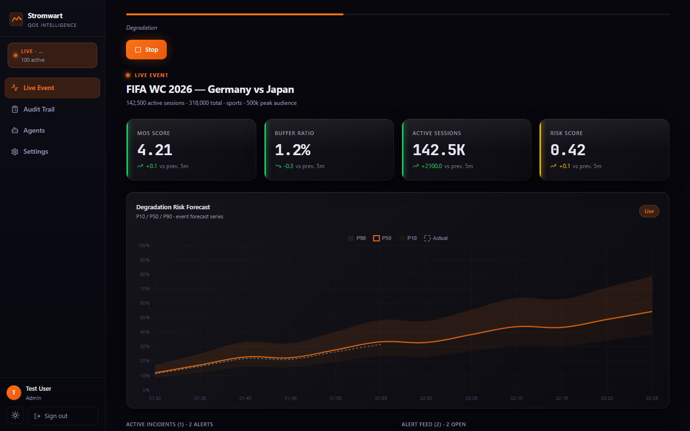
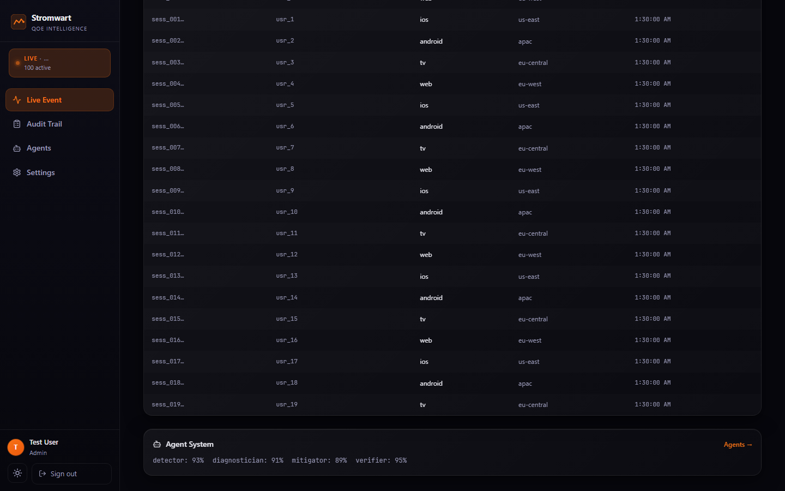
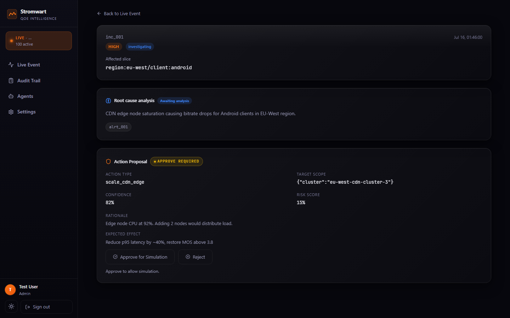
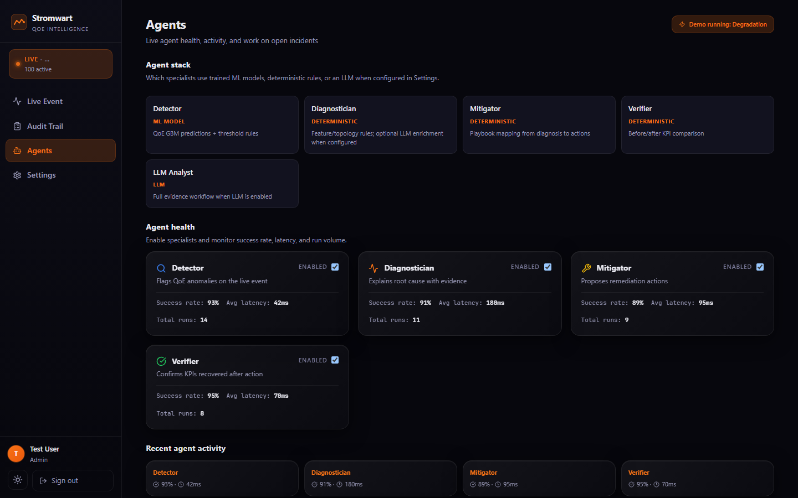
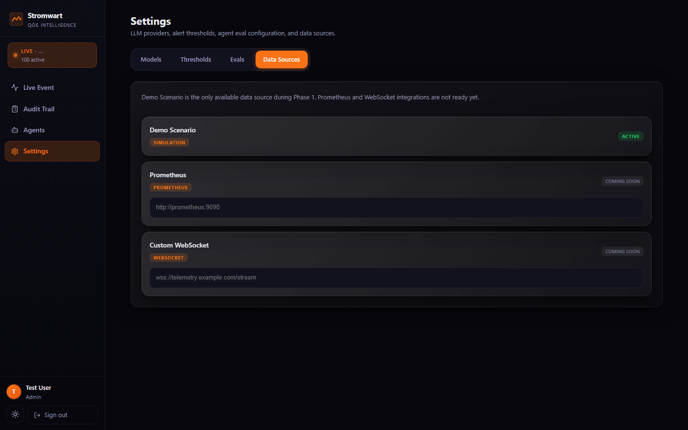

Visual walkthrough · Talent Hack demo
Autonomous QoE intelligence for live streaming at World Cup scale
Stromwart predicts degradation, diagnoses root cause, proposes policy-gated mitigations, and verifies recovery — before viewers churn.
This page is a static demo tour (screenshots). The interactive product runs via
docker compose + local backend/frontend — same REST path for simulation and live ingest.
The problem
At peak live events, platforms notice QoE failures only after users leave. Threshold alerts are noisy and rarely produce a safe, verified fix.
The loop
- Detect — anomalies on telemetry & forecasts
- Diagnose — root-cause across CDN / network / client
- Mitigate — deterministic playbooks + guardrails
- Verify — closed-loop KPI check that the fix worked
Core OODA path is deterministic. LLMs (Ollama / Groq / Gemini / OpenAI / Anthropic) are optional enrichment.
Product walkthrough
Captured from the live-ops UI against a FIFA-style simulation scenario (mocked Auth0 + API for deterministic shots).





Stack
- FastAPI + TimescaleDB/Postgres telemetry & feature pipeline
- LightGBM QoE scoring + conformalized quantile forecasting
- Hand-rolled OODA supervisor (no agent frameworks)
- React live ops UI with SSE updates
- Eval harness + append-only audit trail
Reproduce the interactive demo
git clone https://github.com/SwaggyXO/stromwart.git
cd stromwart
docker compose up -d postgres
cd backend && uv sync && uv run alembic upgrade head
uv run uvicorn stromwart.app:app --reload --port 8000
# new terminal
cd frontend && npm install && npm run devStart a simulation scenario from the Live Event page to watch detect → diagnose → mitigate → verify.
Full Quick Start